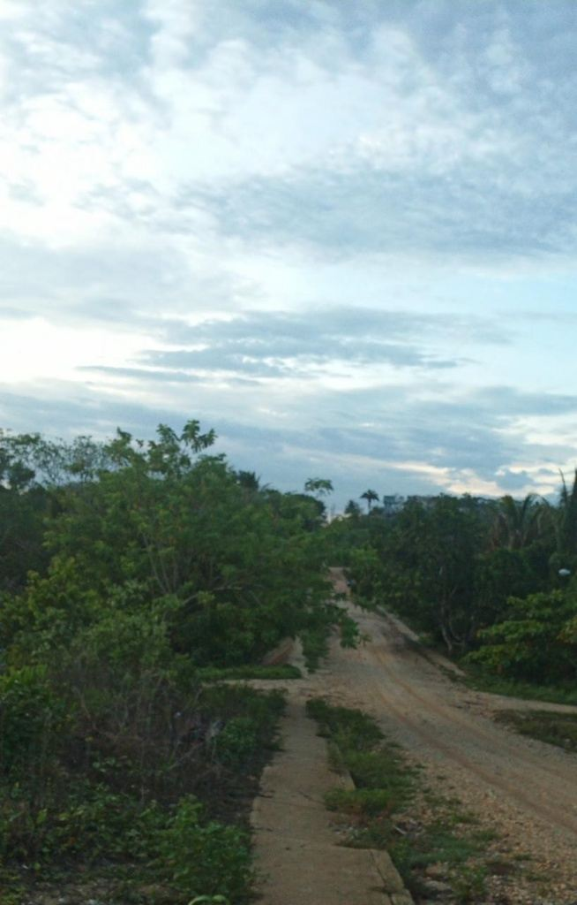

Memoria Fotográfica
Los Orígenes y Transformación
Trancas Viejas ha experimentado una constante evolución en sus vías de comunicación. Durante sus primeros años, la movilidad de la comunidad dependía de caminos de terracería que conectaban los hogares y parcelas con la región ejidal de Moloacán.
El esfuerzo de sus habitantes y la llegada paulatina de infraestructura básica —como la pavimentación de accesos principales y la conectividad vial— han marcado etapas fundamentales en el desarrollo del poblado.

📷 Camino antes del proceso de pavimentación.